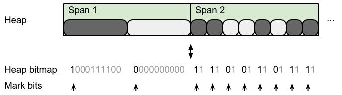
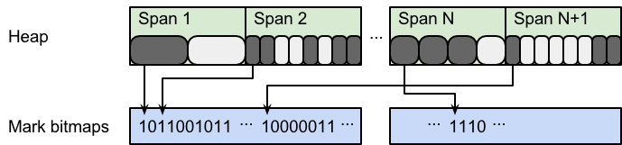
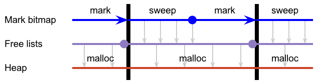
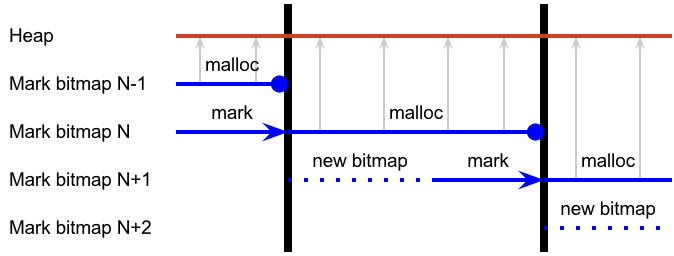
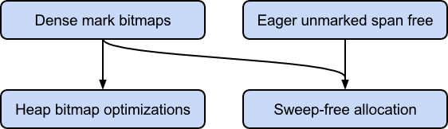

Proposal: Dense mark bits and sweep-free allocation¶
or, How I learned to stop worrying and love the bitmap
Author: Austin Clements
Last updated: 2015-09-30
Discussion at https://golang.org/issue/12800.
Abstract¶
This document proposes a change to memory allocation to eliminate the need for the sweeper and a new representation for the mark bitmap that enables this. This reduces the cost of allocation, significantly improves the locality of the mark bitmap, and paves the way for future advances to the Go GC that require multiple mark bits.
Background¶
All current releases of Go up to and including Go 1.5 use a mark-sweep garbage collector. As of Go 1.5, this works by alternating between a mostly-concurrent mark phase and a concurrent sweep phase. The mark phase finds all reachable objects and marks them, leaving all unreachable objects unmarked. The sweep phase walks through the entire heap, finds all unmarked objects, and adds them to free lists, which the allocator in turn uses to allocate new objects.
However, this sweep phase is, in a sense, redundant. It primarily transforms one representation of the free heap—the mark bits—into another representation of the free heap—the free lists. Not only does this take time, but the free list representation is unfriendly to modern CPUs since it is not very cacheable and accesses to it are hard to predict. Furthermore, the current mark representation is also cache-unfriendly, which adds even more to the cost of sweeping.
This document proposes a design for eliminating the sweeper. The key idea is to allocate directly using the mark bitmap, foregoing the free list representation entirely. Doing this efficiently requires a new, dense representation for mark bits that enables fast scanning and clearing. This representation also makes it easy to maintain multiple mark bitmaps simultaneously. We introduce the dense bitmap representation first. We then present a simple system for allocation based on two mark bitmaps that eliminates the free list and hence the need for the sweeper.
Motivation¶
Typical Go programs spend about 5% of their CPU in the sweeper or in cache misses induced by the free list representation. Hence, if we can significantly reduce or eliminate the cost of the sweeping from allocation and improve the free set representation, we can improve overall program performance.
To measure this, we ran the go1 benchmark suite, just the BinaryTree17
benchmark with -benchtime 5s, and the x/benchmarks garbage benchmark
with -benchmem 1024. These represent a range of CPU-intensive and
allocation-intensive benchmarks. In all cases, GOMAXPROCS is 4. The
CPU time breaks down as follows:
| | go1 (all) | BinaryTree17 | garbage 1GB | | — | ———:| ————:| ———–:| | CPU in mark | 2.8% | 4.0% | 34.7% | | CPU in sweep | 3.3% | 20.6% | 5.2% | | CPU in mallocgc (excl. sweep, GC) | 6.8% | 39.0% | 15.8% | | % of mallocgc spent walking free list | 19.2% | 17.5% | 14.3% |
(Times were collected using pprof. mark shows samples matching
\.gc$|gcBgMarkWorker|gcAssistAlloc|gchelper. sweep shows
mSpan_Sweep. mallocgc shows mallocgc -gcAssistAlloc -mSpan_Sweep.)
This proposal replaces sweepone with a scan that should require roughly 1ms of CPU time per heap GB per GC cycle. For BinaryTree17, that’s less than 0.1% of its CPU time, versus 21% for the current sweep. It replaces the cost of walking the free list in mallocgc with what is likely to be a smaller cost of sequentially scanning a bitmap. It’s likely to have negligible effect on mark performance. Finally, it should increase the heap footprint by roughly 0.02%.
Dense mark bitmaps¶
Currently, the mark bits are stored in the heap bitmap, which is a structure that stores two bits for every word of the heap, using a simple formula to map between a heap address and a bitmap address. The mark bit is stored in one of the bits for the first word of every object. Because mark bits are “on the side,” spans can be efficiently subdivided into smaller object sizes (especially power-of-two sizes). However, this sparse bitmap is expensive to scan and clear, as it requires a strided, irregular traversal of memory, as shown in figure 1. It also makes it difficult (albeit not impossible) to maintain two sets of mark bits on word-sized objects, which is necessary for sweep-free allocation.

Figure 1. In Go 1.5, mark bits are sparse and irregularly strided.
Therefore, this proposal separates the mark bits from the heap bitmap into a dedicated mark bitmap structure. The difficulty here is, because objects are different sizes and a given span can be freed and reused for a different size class any number of times, a dense mark bitmap cannot be addressed solely based on an object’s address. It must be indirected through the object’s span.
One solution is to store the mark bits for the objects in each span as a dense bit array in the span itself, either before or after the objects. This dense representation is more efficient to scan and clear than the sparse representation, but still requires visiting every span to do so. Furthermore, it increases memory fragmentation, especially for power-of-two allocations, which currently have zero external fragmentation.
We propose maintaining a dense mark bitmap, but placing it outside of the spans and in mostly contiguous memory by allocating the mark bitmap anew for every GC cycle. In both the current sparse bitmap and the strawman dense bitmap above, an object’s mark bit is in the same location for the lifetime of that object. However, an object’s mark only needs to persist for two GC cycles. By allocating the mark bitmap anew for each GC cycle, we can avoid impacting span fragmentation and use contiguous memory to enable bulk clearing of the bitmap. Furthermore, discarding and recreating the bitmap on every cycle lets us use a trivial scheme for allocating mark bitmaps to spans while simultaneously dealing with changing heap layouts: even though spans are reused for different size classes, any given span can change size class at most once per GC cycle, so there’s no need for sophisticated management of a mark bitmap that will only last two cycles.
Between GC cycles, the runtime will prepare a fresh mark bitmap for the upcoming mark phase, as shown in figure 2. It will traverse the list of in-use spans and use a simple arena-style linear allocator to assign each span a mark bitmap sized for the number of objects in that span. The arena allocator will obtain memory from the system in reasonably large chunks (e.g., 64K) and bulk zero it. Likewise, any span that transitions from free to in-use during this time will also be allocated a mark bitmap.

Figure 2. Proposed arena allocation of dense mark bitmaps. For illustrative purposes, bitmaps are shown allocated without alignment constraints.
When the mark phase begins, all in-use spans will have zeroed mark bitmaps. The mark phase will set the mark bit for every reachable object. Then, during mark termination, the garbage collector will transfer this bitmap to the allocator, which can use it to find free objects in spans that were in-use at the beginning of the mark phase. Any spans that are allocated after the mark phase (including after mark termination) will have a nil allocation bitmap, which is equivalent to all objects in that span being unmarked and allows for bump-pointer allocation within that span. Finally, when the allocator is done with the mark bitmap, the whole arena can be bulk freed.
Dense mark bitmap performance¶
The entire process of allocating and clearing the new mark bitmap will require only about 1 ms of CPU time per heap GB. Walking the list of in-use spans requires about 1 ms per heap GB and, thanks to the arena allocation, zeroing the bitmap should add only 40 µs per heap GB, assuming 50 GB/sec sequential memory bandwidth and an average object size of 64 bytes.
Furthermore, the memory overhead of the mark bitmap is minimal. The instantaneous average object size of “go build std” and “go test -short std” is 136 bytes and 222 bytes, respectively. At these sizes, and assuming two bitmaps, the mark bitmaps will have an overhead of only 0.18% (1.9 MB per heap GB) and 0.11% (1.2 MB per heap GB), respectively. Even given a very conservative average object size of 16 bytes, the overhead is only 1.6% (16 MB per heap GB).
Dense mark bits should have negligible impact on mark phase performance. Because of interior pointers, marking an object already requires looking up that object’s span and dividing by the span’s object size to compute the object index. With the sparse mark bitmap, it requires multiplying and adding to compute the object’s base address; three subtractions, three shifts, and a mask to compute the location and value of the mark bit; and a random atomic memory write to set the mark bit. With the dense mark bitmap, it requires reading the mark bitmap pointer from the span (which can be placed on the same cache line as the metadata already read); an addition, two shifts, and a mask to compute the location and value of the mark bit; and a random atomic memory write to set the mark bit.
Dense mark bits should simplify some parts of mark that currently require checks and branches to treat the heap bitmap for the first two object words differently from the heap bitmap for the remaining words. This may improve branch predictor behavior and hence performance of object scanning.
Finally, dense mark bits may slightly improve the performance of unrolling the heap bitmap during allocation. Currently, small objects require atomic writes to the heap bitmap because they may race with the garbage collector marking objects. By separating out the mark bits, the sole writer to any word of the heap bitmap is the P allocating from that span, so all bitmap writes can be non-atomic.
Sweep-free allocation¶
The key idea behind eliminating the sweeper is to use the mark bitmap directly during allocation to find free objects that can be reallocated, rather than transforming this bitmap into a free list and then allocating using the free list. However, in a concurrent garbage collector some second copy of the heap free set is necessary for the simple reason that the mutator continues to allocate objects from the free set at the same time the concurrent mark phase is constructing the new free set.
In the current design, this second copy is the free list, which is fully constructed from the mark bits by the time the next mark phase begins. This requires essentially no space because the free list can be threaded through the free objects. It also gives the system a chance to clear all mark bits in preparation for the next GC cycle, which is expensive in the sparse mark bitmap representation, so it needs to be done incrementally and simultaneously with sweeping the marks. The flow of information in the current sweeper is shown in figure 3.

Figure 3. Go 1.5 flow of free object information.
We propose simply using two sets of mark bits. At the end of the mark phase, the object allocator switches to using the mark bitmap constructed by the mark phase and the object allocator’s current mark bitmap is discarded. During the time between mark phases, the runtime allocates and bulk zeroes the mark bitmap for the next mark phase. The flow of information about free objects in this design is shown in figure 4.

Figure 4. Proposed flow of free object information.
To allocate an object, the object allocator obtains a cached span or allocates a new span from the span allocator as it does now. The span allocator works much like it does now, with the exception that where the span allocator currently sweeps the span, it will now simply reset its bitmap pointer to the beginning of the span’s bitmap. With a span in hand, the object allocator scans its bitmap for the next unmarked object, updates the span’s bitmap pointer, and initializes the object. If there are no more unmarked objects in the span, the object allocator acquires another span. Note that this may happen repeatedly if the allocator obtains spans that are fully marked (in contrast, this is currently handled by the sweeper, so span allocation will never return a fully marked span).
Most likely, it makes sense to cache an inverted copy of the current word of the bitmap in the span. Allocation can then find the next set bit using processor ctz intrinsics or efficient software ctz and bit shifts to maintain its position in the word. This also simplifies the handling of fresh spans that have nil allocation bitmaps.
Finalizers¶
One complication of this approach is that sweeping is currently also responsible for queuing finalizers for unmarked objects. One solution is to simply check the mark bits of all finalized objects between GC cycles. This could be done in the same loop that allocates new mark bits to all spans after mark termination, and would add very little cost. In order to do this concurrently, if the allocator obtained a span before the garbage collector was able to check it for finalizers, the allocator would be responsible for queuing finalizers for objects on that span.
Compatibility¶
This proposal only affects the performance of the runtime. It does not change any user-facing Go APIs, and hence it satisfies Go 1 compatibility.
Implementation¶
This work will be carried out by Austin Clements and Rick Hudson during the Go 1.6 development cycle.
Figure 5 shows the components of this proposal and the dependencies between implementing them.

Figure 5. Implementation dependency diagram.
We will implement dense mark bitmaps first because it should be fairly easy to update the current sweeper to use the dense bitmaps and this will enable multiple mark bitmaps. We will then build sweep-free allocation on top of this. Sweep-free allocation makes it difficult to detect completely unmarked spans and return them to the span allocator, so we will most likely want to implement eager freeing of unmarked spans first, as discussed in issue #11979, though this is not strictly necessary. At any point after dense mark bitmaps are in place, we can implement the optimizations to the heap bitmap discussed in “Dense mark bitmap performance.”
Possible extensions¶
1-bit heap bitmap¶
With the mark bits no longer part of the heap bitmap, it’s possible we could pack the heap bitmap more tightly, which would reduce its memory footprint, improve cache locality, and may improve the performance of the heap bitmap unroller (the most expensive step of malloc). One of the two bits encoded in the heap bitmap for every word is a “dead” bit, which forms a unary representation of the index of the last pointer word of the object. Furthermore, it’s always safe to increase this number (this is how we currently steal a bit for the mark bit). We could store this information in base 2 in an object-indexed structure and reduce overhead by only storing it for spans with a sufficiently large size class (where the dead bit optimization matters). Alternatively, we could continue storing it in unary, but at lower fidelity, such as one dead bit per eight heap words.
Reducing atomic access to mark bitmap¶
If the cost of atomically setting bits in the mark bitmap turns out to be high, we could instead dedicate a byte per object for the mark. This idea is mentioned in GC literature [Garner, 2007]. Obviously, this involves an 8× increase in memory overhead. It’s likely that on modern hardware, the cost of the atomic bit operation is small, while the cost of increasing the cache footprint of the mark structure is probably large.
Another way to reduce atomic access to the mark bitmap is to keep an additional mark bitmap per P. When the garbage collector checks if an object is marked, it first consults the shared bitmap. If it is not marked there, it updates the shared bitmap by reading the entire word (or cache line) containing the mark bit from each per-P mark bitmap, combining these words using bitwise-or, and writing the entire word to the shared bitmap. It can then re-check the bit. When the garbage collector marks an object, it simply sets the bit in its per-P bitmap.
References¶
Hans-Juergen Boehm and Mark Weiser. 1988. Garbage collection in an uncooperative environment. Software Practice and Experience 18, 9 (September 1988), 807–820.
Robin Garner, Stephen M. Blackburn, and Daniel Frampton. 2007. Effective prefetch for mark-sweep garbage collection. In Proceedings of the 6th international symposium on Memory management (ISMM ‘07). ACM, New York, NY, USA, 43–54.
Leslie Lamport. 1976. Garbage collection with multiple processes: An exercise in parallelism. In International Conference on Parallel Processing (ICPP). 50–54.
Christian Queinnec, Barbara Beaudoing, and Jean-Pierre Queille. 1989. Mark DURING Sweep rather than Mark THEN Sweep. In Proceedings of the Parallel Architectures and Languages Europe, Volume I: Parallel Architectures (PARLE ‘89), Eddy Odijk, Martin Rem, and Jean-Claude Syre (Eds.). Springer-Verlag, London, UK, UK, 224–237.